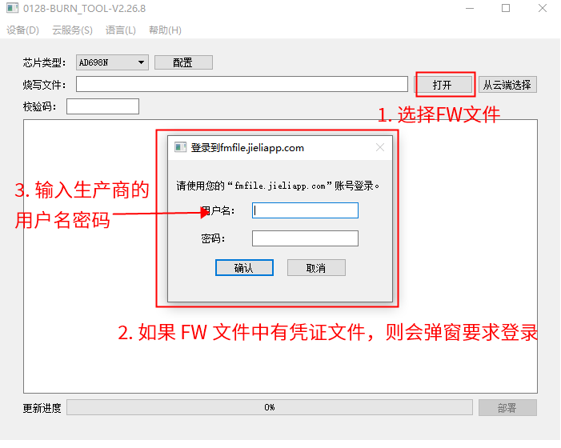
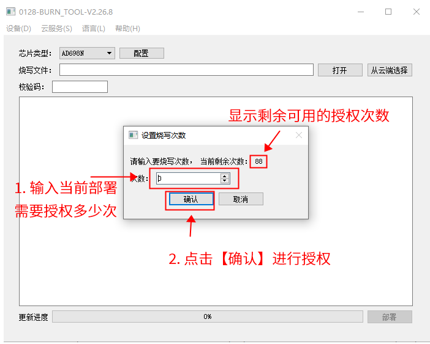
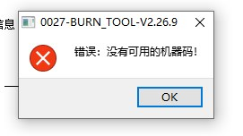
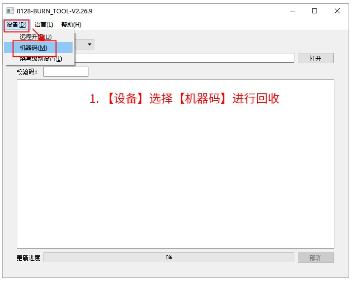
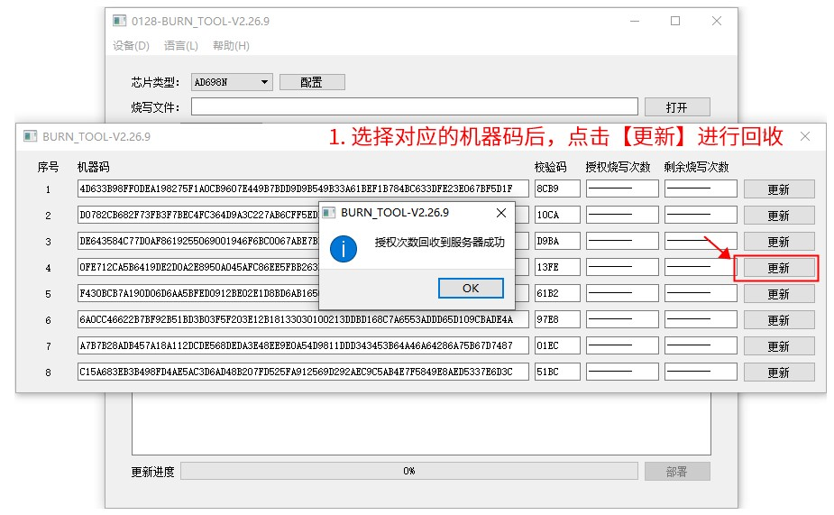

4.3. 生产商需要做的事情
4.3.1. 申请账号
如果您还没有多算法授权服务器的账号，那么首先联系您的算法提供商， 请算法提供商帮助您获取账号。 更多信息请查阅杰理服务器使用方式
4.3.2. 协商并分配 Authroization_ID
与每个用到的算法公司，协商好算法公司的 Authroization_ID，需要避免 ID 冲突（即每个算法的ID不能重复）
在同一个 SDK 中，这个 ID 不能重复
ID 的范围，需要在（64~999）范围内
例如，如果生产商 user-C 需要在同一个 SDK 中使用算法公司 algo-A, 以及 algo-B 的算法。
则需要给他们不同的 ID ，例如，可以 algo-A 的 ID 是 0x1, algo-B 的是 0x2 。
4.3.3. 集成调用算法公司提供的库文件
当算法公司完成算法开发后，会提供.a库文件，里面包含了对应的算法函数。 您需要将.a库文件集成到您的SDK中，以便调用这些算法库文件中的函数。
如果你不清楚如何集成第三方库函数，请参考 如何给 SDK 工程添加第三方库。
集成好算法公司的算法库到SDK后， 如果芯片没有被授权，SDK是不能正常运行算法库的。
这时就需要添加算法凭据文件到FW，使用添加了凭据文件的FW，用烧录器对芯片进行一次烧录。烧录芯片的同时，烧录器会对芯片进行授权。烧录成功后，即完成了对芯片的授权操作。
凭据文件是烧录器向多算法授权服务器申请授权烧录的文件。更多信息请阅读下面的章节。
4.3.4. 下载凭证文件
算法公司在提供算法库后，会通过杰理多算法授权服务器，向您售卖授权次数。
如果算法公司已经成功售卖给您授权。您可以通过杰理多算法授权服务器查看到售卖的次数。
使用您的多算法授权服务器账号登录服务器。
在【我购买的文件】处，可以查看到已经购买成功的授权。在【下载凭证】出，下载对应的凭证文件（即
.tkn文件）。 这个凭证文件（即.tkn文件）包含了Authroization_ID以及授权数据大小等。在生成 FW 文件的时候，用于检查冲突。
由于实际的 .authrun 文件，并不能直接给到最终生成 FW 文件的生产商，所以需要做一个凭证文件做一层隔离
注意，这个凭证文件（即 .tkn 文件），里面没有实际的文件内容，作用是通知烧录器，在部署的时候，从服务器获取文件以及授权


4.3.5. 生成 FW 文件
编译生成 FW 文件的时候，指定这个 SDK 中用到所有算法的凭证文件。
需要修改下载目录中的 isd_config.ini 文件。然后点击运行 download.bat 重新生成 fw/ufw 文件。
这个包含四个步骤：
确定下载目录的位置，也就是
isd_config.ini所在的位置将上一个步骤中，下载得到的
.tkn文件，复制到下载目录中
（即isd_download.exe工作目录中，通常是isd_config.ini所在目录，或者其所在目录的某个子目录中，具体位置请查看download.bat脚本）对应修改
isd_config.ini文件
Note
注意:
1、如果 isd_config.ini 是由 isd_config.c 文件生成的，则同时也去修改 isd_config.c。
避免下次编译后，把 isd_config.ini 文件的修改覆盖了。
2、部分型号参考烧录器支持多算法授权功能的型号，需要isd_download 4.2.54以上版本，且在isd_config.ini配置如下字段：
[EXTRA_CFG_PARAM]
OTP_CFG_SIZE=512;
3、fw文件SDK必须支持多算法功能，请参考算法库（.a 文件）添加授权数据验证,
如sdk出现 链接错误 sys_cfg_read_otp未定义，则参考支持多算法授权的sdk补丁更新对应的补丁,如没找到补丁则按照多算法授权补丁申请
否则烧录后多算法授权功能不生效
# 修改对应 ini 配置，指定 tkn 文件
# 在这里例子中，使用了两个算法公司的算法
# file-fileVbOtr4aFOpxuXTkd20221020093416.tkn
# file-fileX6cwshC2yDJIqA2p20221020093439.tkn
# 是两个分别对于的凭证文件
[FW_ADDITIONAL]
FILE_LIST=(file=ota.bin:type=100),\
(file=file-fileVbOtr4aFOpxuXTkd20221020093416.tkn:type=0xec),\
(file=file-fileX6cwshC2yDJIqA2p20221020093439.tkn:type=0xec)
# 注意，
# 1. 行尾的 \ 字符后面，不能再加其它的字符，包括空格
# 2. (:,)\ 这些字符，都是英文半角字符（注意切换输入法）
# 3. 最后一个列表元素末尾，不需要添加逗号 ,
点击下载目录中的
download.bat重新生成 fw/ufw 文件
4.3.6. 部署 FW 文件
在工厂部署 FW 文件的时候，如果发现文件需要进行授权，将会连接杰理的服务器，扣除授权次数并对芯片授权。
Note
如果有多个授权bin文件，授权次数是这些中剩余次数的最小值。
如果下图中，未能弹出【登录到fmfile.jieliapp.com】的界面，可能有两个原因：
你部署的 fw/ufw 生成的时候，未添加
.tkn文件。你的烧录器版本较旧（需要 2.27.4 或以上）


Note
如果弹出下面的错误【没有可用的机器码】

可能有下面几种原因：
你的烧录器硬件版本太旧，需要更换硬件。请联系购买烧录器处，进行更换（需要硬件版本 V5.2 或以上，参考 烧录器主机介绍 和 第三方数据（认证码）烧录功能。
可能是因为你的机器码用了太多，已经没有多余的机器码可用。参考下面的 回收未使用的授权次数 移除一些机器码。
4.3.7. 回收未使用的授权次数
有些时候，可能烧录器中剩余了一些授权次数未使用。这些次数可以回收到服务器后，再分配给别的烧录器。

